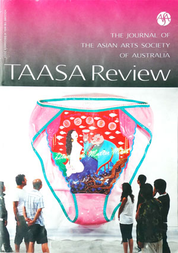 |
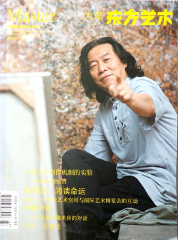 |
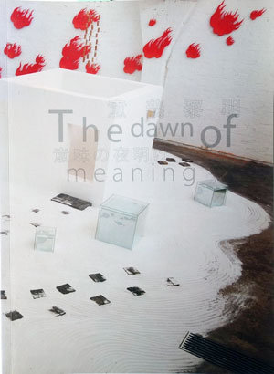 |
2009
the journal of the Asian arts
society of Australia,
TAASA Review,
Volume 18, 4 Dec. front page |
2008
Ten Questions to Wang Zhiyuan,
Master ORIENTAL ART,
Nov. p68-73 |
2006
The dawn of meaning, B.T.A.P. /
Tokyo Gallery, 10 Sep- 8 Oct, P13
10 Sep- 8 Oct, P13 |
| |
|
|
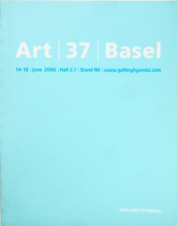 |
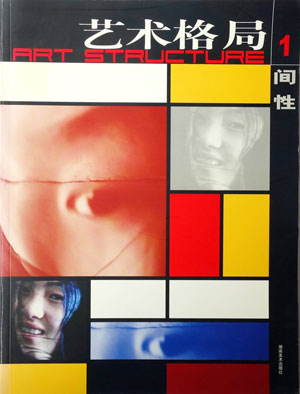 |
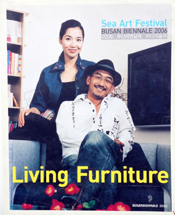 |
2006
Art 37 Basel,
Gallery HYUNDAI,
14 - 18 Jun, p47-48 |
2006
Art Structure,
Art Press, Huanan,
Mar, p22-29 |
2006
Busan Biennale 2006,
Sea Art Festival,
p101 |
| |
|
|
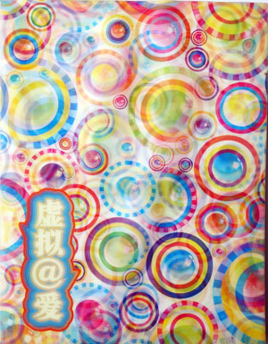 |
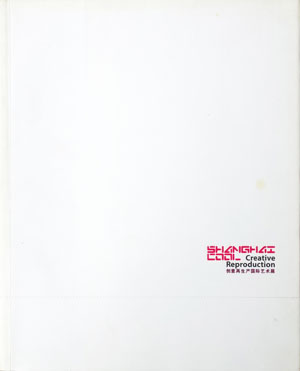 |
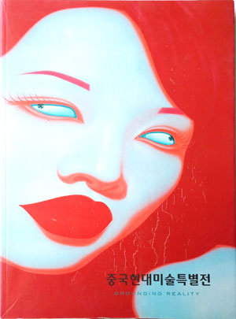 |
2006
FICTION@LOVE,
MoCA Shanghai,
Jan, p57-58 |
2005
Wang Zhiyuan, Creative Reproduction,
Shanghai Duolun Museum of Modern Art,
p118-119 |
2005
Grounding Reality,
GALLY MEE,
p96-97 |
| |
|
|
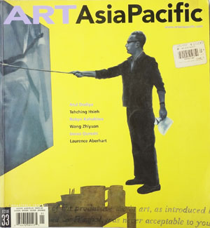 |
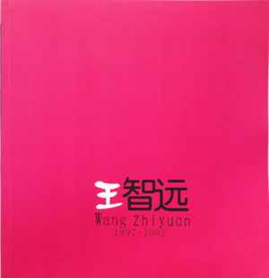 |
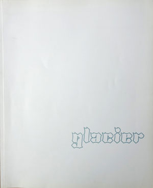 |
2002
The art of Wang Zhiyuan,
ART, ASIA Pacific,
p68-75 |
1997-2002
Wang Zhiyuan, this project has been assisted
by the commonwealth Government through the
Australia Council，
itself arts funding and advisory body. |
2001
RMIT Gallery and RMIT University,
glacier,
Sep. P27 |
|